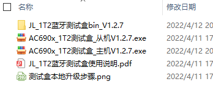
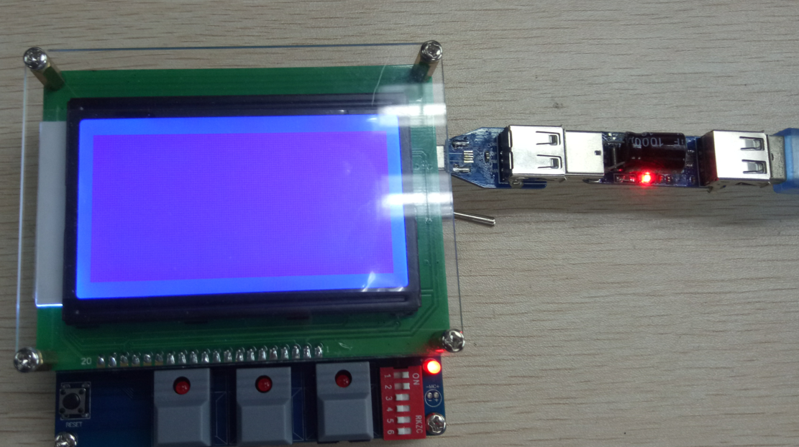
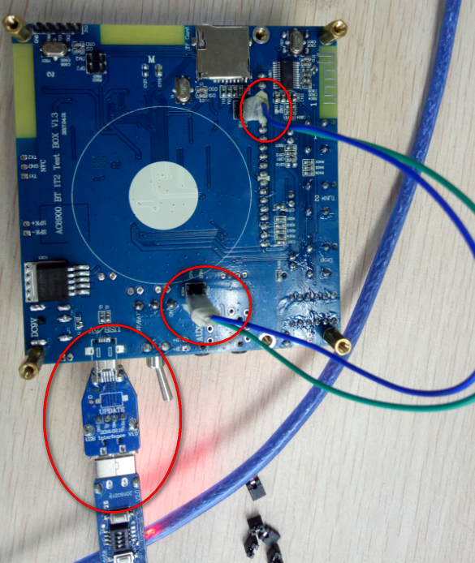

3.3. Test Box Firmware Upgrade
3.3.1. Remote upgrade
Remote upgrade of the test box firmware is supported starting from test box version V122. In the test box PC interface, select "Test box upgrade" (测试盒升级) -> "Remote upgrade" (远程升级) to open the remote upgrade window. The procedure is shown in the figure below:

If a forced upgrade is needed (for example, if the upgrade is interrupted unexpectedly or power is lost), you can still upgrade the firmware of the three chips on the test box one by one with the USB Forced Upgrade Tool and jumpers, as described in method 2 under Local upgrade. Likewise, select the firmware version first and then click "Upgrade" (升级); the PC tool automatically identifies the master and slave chips of the test box and updates the corresponding firmware.
3.3.2. Local upgrade
For upgrading the test box firmware, method 1 is preferred; use method 2 only if problems occur when upgrading with method 1.
Method 1:
Upgrade with the bt_test_box.exe software. No jumpers are needed; just plug into the USB port to upgrade the 1-to-2 test box from the PC. (This method is supported only if the firmware running on the test box is AC690x_1T2 test box V1.0.1 or later.) The tool can read the version number, as shown in the figure below.
For this method, the test box must be running normally. Plug in the MiniUSB cable and press and hold [Button 4] (to the left of the DIP switch) to enter upgrade mode.


Drag AC690x_1T2测试盒bin_V1.0.1\jl_690x.bin into the "Slave" (从机) field
Drag AC690x_1T2测试盒bin_V1.0.1\jl_690x_master.bin into the "Master" (主机) field. (After opening the files, click "Upgrade test box" (升级测试盒); do not power off during the upgrade.) When the upgrade reaches 100%, restart the test box. If both channels on the display show "Searching" (搜索中), the master and slave upgrades succeeded and the box is running normally.
Handling upgrade errors: if a channel shows "Initializing" (初始化中), the slave upgrade failed; if the display shows nothing, the master upgrade failed. In that case, perform a forced firmware upgrade of the 1-to-2 test box with the small tool and jumpers described in method 2.
Note
If the test box firmware was upgraded from V1.0.1\V1.0.2 to V1.0.3 with method 1 and, after the upgrade, the master does not run correctly while the slaves are normal,
then upgrade the master again with method 2; the slaves do not need to be upgraded again
Method 2:
Upgrade the 1-to-2 test box firmware with the USB upgrade tool. The test box has three chips, and a firmware upgrade must update all three: two slaves (with the same firmware) and one master.

Where:
AC690x_1T2测试盒_从机Vx.x.x.exe: slave firmware upgrade package
AC690x_1T2测试盒_主机Vx.x.x.exe: master firmware upgrade package
To upgrade the master, connect the USB upgrade tool, plug it into the USB port, and click AC690x_1T2测试盒_主机Vx.x.x.exe to download.

To upgrade the two slaves one at a time, first remove the 6 resistors on the back of the test box circuit board (all the resistors circled in the figure below must be removed). Then connect the USB port with Dupont wires (DM to slave 1DM or DM2, DP to slave 1DP or DP2). The wiring on the back of the test box (
download slave 1 and slave 2 separately) is shown in the figure below. Connect the USB upgrade tool, plug it into the USB port, and click AC690x_1T2测试盒_从机Vx.x.x.exe to download. (Solder the 6 resistors back on after all three chips have been upgraded.)
